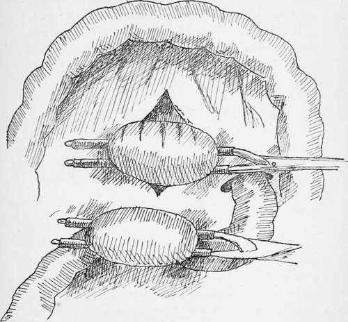
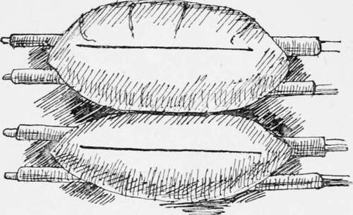
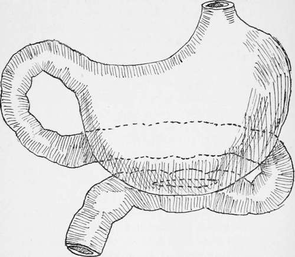
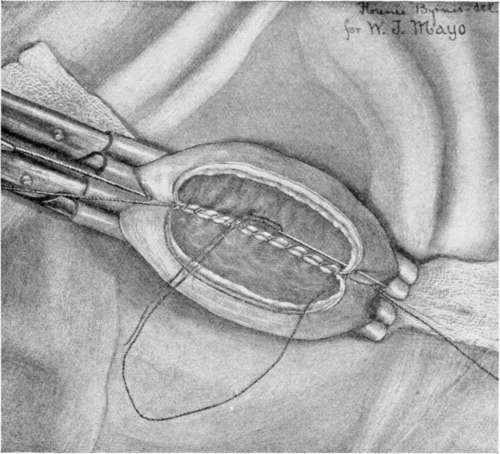
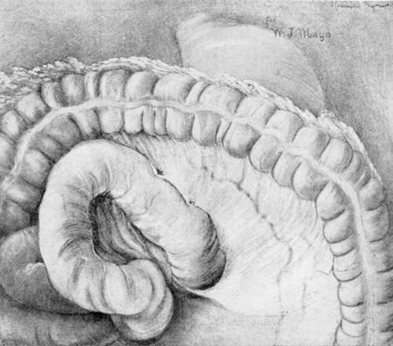
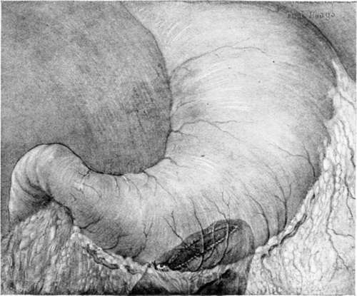

The Preparation Of The Patient
Description
This section is from the book "Cancer Of The Stomach", by A. W. Mayo Robson, D.Sc, F.R.C.S.. Also available from Amazon: Cancer of the Stomach.
The Preparation Of The Patient
It has been the custom with many surgeons to put patients suffering from disease of the stomach through a long course of preliminary treatment, such as frequent lavage of the stomach and abstention from food before operation. This, as a rule, is quite unnecessary, and certainly inadvisable in the greater number of cases; first, because the treatment is depressing and debilitating in the case of patients already exhausted by a long-illness ; secondly, as proved by Dr. Harvey Cushing's bacteriological investigations, the stomach contents speedily become aseptic if the mouth be cleansed and aseptic foods administered ; and thirdly, as proved by ample clinical experience, elaborate preliminary treatment is unnecessary to success.
If the stomach is greatly dilated and the contents are foul, then lavage with simple boiled water night and morning is adopted on the day before operation. The careful cleansing of the mouth and teeth and the administration of foods sterilised by boiling are advisable. The last light meal is given the night before, about twelve hours, and a nutrient enema is given about one hour before operation. In ordinary cases no lavage is adopted, but care is exercised in cleansing the mouth and giving sterilised food for thirty-six or forty-eight hours prior to operation, and a nutrient enema consisting of 1 oz. of brandy, 1 oz. of liquid peptonoids, and 10 oz. of normal saline solution is administered about an hour before operation.
Every patient is enveloped in a suit of cotton wool made by the nurse out of gamgee tissue, and each has an injection of from 5 to 10 m of liquor strychnine (B.P) administered subcutaneously before or during the operation. The preparation of the skin and other aseptic details of the operation differ in no respect from those observed in operations generally.
Although the operation of gastroenterostomy has been performed in many different ways there are practically only two distinct methods : one Wolfler's, in which the jejunum is fixed to the anterior stomach-wall, and the other von Hacker's, in which the anastomosis is effected between the jejunum and the posterior wall of the stomach. From a somewhat extensive experience of the two, I have no hesitation in strongly recommending the posterior, where that operation is possible, for it must be granted that there are some exceptional cases in which, on account of adhesions to the pancreas, extensive involvement of the posterior wall of the stomach by growth or from congenital deformity, " a very short meso-colon," the anterior method may have to be selected or a Roux's operation performed.
The following is a description of the operation which I am in the habit of performing :
The abdomen is opened by an incision 3 to 4 in. loner, 1 in. to the rig-lit of the middle line above the umbilicus. The stomach is thus exposed. Sterilised gauze is laid on the abdomen surrounding the wound. The great omentum and the transverse colon are then lifted up and brought out of the wound, thus exposing the under surface of the transverse meso-colon and the attached part of the jejunum on the left side of the second lumbar vertebra. The bowel is caught up in a clamp just beyond the duodeno-jejunal flexure, at which place the anastomosis is made, thus avoiding any loop. A vertical slit is then made in the transverse meso-colon between the blood-vessels, which are readily seen. By pressing with the left hand above the colon the posterior wall of the stomach is made to project through the opening in the meso-colon, the lower border of the stomach being readily recognised by the blood-vessels which are coursing along it. The most dependent part of the stomach close to the lower border is then brought through the slit and grasped by a clamp as shown in the diagram.
Fig. 13.
The great omentum and the transverse colon are then returned into the abdomen above the parts to be anastomosed, and covered with a sterilised gauze pad. The two clamped portions of the bowel and stomach are now placed side by side with a strip of gauze behind and between them. Two or three vessels passing from the main gastro-epiploic arteries across the part where the stomach has to be incised are ligatured in their continuity so as to save bleeding when the stomach is cut. A continuous suture of No. 1 Pagenstecher thread in a round, fully-curved needle is employed to unite the serous surfaces for a distance of from 2 to 2h in., the needle being then laid aside threaded. A quarter of an inch in front of this serous suture the two viscera are incised, and the edges are united by a chromic catgut suture, which takes up all the coats and brings into apposition the mucous membrane of the intestine and stomach. This suture is continued round the circle until it reaches the point where it began, when the suture is at once tied off and cut short. The serous suture previously laid aside is now taken up and continued round the front half of the circle in front of the newly-made opening until the point is reached where it began, when the two ends are knotted and cut short. The edges of the aperture are thus united firmly by a serous and a marginal suture. The clamps are now removed and the piece of gauze behind the anastomosed viscera is then drawn out and the omentum and stomach are brought down to their normal position. In order that there may be no kinking at the point of junction I am accustomed to place one or two additional sutures on the distal side of the united viscera and to bring the distal part of the jejunum over to the right side of the spine in arranging the visceral toilet. Two or three interrupted sutures are used to unite the margin of the meso-colic opening to the stomach and jejunum. The omentum and transverse colon are then brought down into their normal position, and the abdomen is closed by a continuous No. 3 catgut suture, which first unites the peritoneum and the posterior rectus sheath together, and the same suture returning unites the anterior sheath of the rectus ; but in order to give additional strength to the abdominal wall I usually pass from three to six through-and-through No. 2 slightly chromicised catgut sutures, which, however, do not penetrate the skin, and which are cut short and buried beneath it. The van Horn 20-day chromic sutures are here very useful. The skin is then brought together either by means of several interrupted silkworm-gut sutures or by the well-known Michel's metal clips, which I myself prefer.
Fig. 14.
Fig. 15.- Gastrojejunostomy showing the relation of the jejunum to the stomach after the anastomosis has been effected.
It will be noticed that I have said nothing of making the opening in the stomach oblique, nor of excising redundant mucous membrane, nor of displacing the large vessels coursing along the greater curvature, for these modifications of the operation are quite unnecessary.
The anastomotic opening should be made close to the lower border of the stomach, and the opening should never be less than 2 in. in length. If, as should be the case, the mucous margins of the stomach and bowel are united, there is no fear of serious subsequent diminution of the opening by cicatricial contraction.
The modification I used to adopt of inserting a decalcified bone bobbin before completing the anterior half circle of the continuous sutures secures an immediately patent opening and removes the possibility of kinking. Those who have had the opportunity of observing my cases after the employment of the bone bobbin and cases in which the simple suture has been used without any splint, have expressed to me their belief that the recovery is smoother than when the bobbin is not used ; but as a matter of fact I have employed simple sutures for a considerable time, and have found the results equally satisfactory.
The use of the Murphy button is on quite a different principle, as it acts by causing pressure necrosis of the apposed, surfaces. It can certainly be done a little quicker, though really very little time is saved; but the two fatal objections to its use are the small size of the opening, which tends to contract, and the danger of the button falling back into and being retained in the stomach, a danger which is proved to have frequently occurred in practice, necessitating in many cases a further operation. I therefore personally never employ it, and cannot recommend its use to others.
A modification of the posterior operation has been suggested by Dr. W. J. Mayo (1) which has given him satisfactory results. The operation which is shown in the diagrams consists in attaching the jejunum to the stomach in its vertical direction, the advantage claimed being that it does not alter the axis of the jejunum.
The suggestion of McGraw to make the incision safer by the employment of an elastic ligature is to my mind neither necessary from the point of view of safety nor desirable from that of accuracy; moreover, as the anastomosis has to be made by a process of sloughing which takes some days to complete, and always leads to an opening of uncertain size and one with a tendency to contract, I have the feeling that the method, though ingenious, is clumsy and inexact, and one which should not be employed by a surgeon who is capable of adopting the more exact technique herein described.

Plate XI. Completed operation from behind margin of torn mesocolon attached by several interrupted sutures to line of union.
Plate XII. Forceps in place and anastomosis half completed by suture.
Plate XIII. Completed operation from behind margin of torn mesocolon attached by several interrupted sutures to line of union.
Plate XIV. Completed operation from in front. Anastomotic opening shows through as darkened area on posterior wall. Note that it goes to the bottom of the gastric cavity and slightly anterior, as indicated bv suture line in the omental attachment.
When an operation involving so many possibilities of danger, and often undertaken in very serious conditions, can be accomplished with a little over 1 per cent, mortality in over 100 consecutive cases of ulcer and other simple disease of the stomach, there cannot be much seriously wrong with the technique, and when I see alternative methods suggested, such as Roux's Y operation, or that of short-circuiting the jejunal loop, both of which involve the making of a double anastomosis, and which are acknowledged to be done in order to avoid the complication of the vicious circle-a complication which does not occur when the operation I have described in detail is performed-I am at a loss to understand why such operations continue to be done save under very exceptional circumstances.
Although I have given a description of gastroenterostomy as I have done it for several years, and one which I know has stood the test of numbers and of time, I feel that for a text-book the description of the operation would not be complete were I not to describe other methods.
Continue to:
Tags
stomach, operation, cancer, tumour, ulcer, gastric, gastrectomy